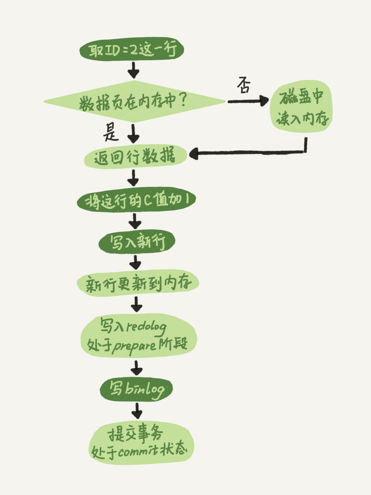
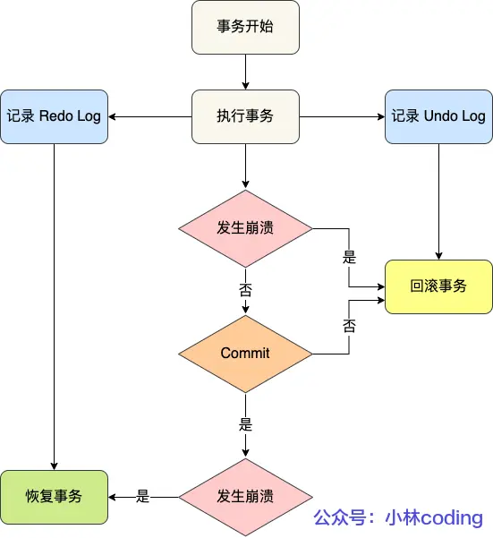
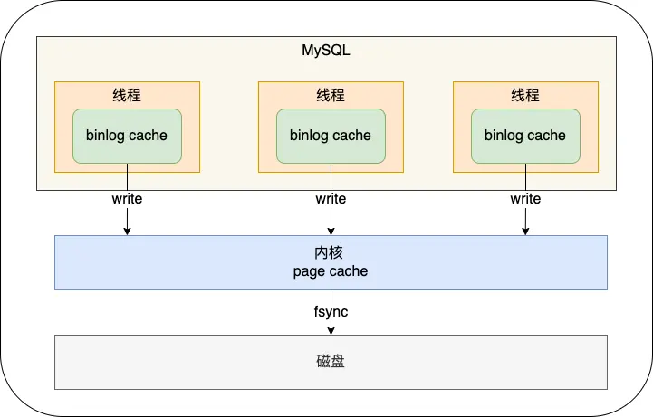
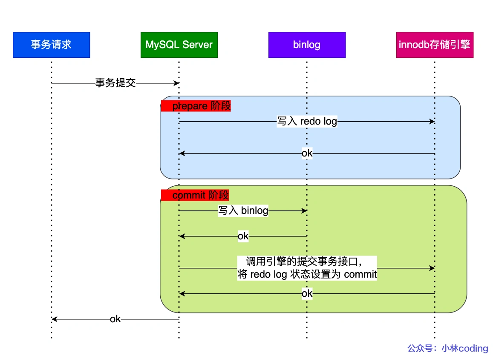

mysql-面试
MySQL 面试要点
基础
MySQL 查询流程
mysql逻辑架构图

连接器
建立连接，管理连接、校验用户身份、权限固定在该连接上。查询缓存
查询语句如果命中查询缓存则直接返回，否则继续往下执行。MySQL 8.0 已删除该模块；解析器
通过解析器对 SQL 查询语句进行词法分析、语法分析，然后构建语法树，方便后续模块读取表名、字段、语句类型；预处理器
检查表或字段是否存在；将 select * 中的 * 符号扩展为表上的所有列。优化器
基于查询成本的考虑， 选择查询成本最小的执行计划；- 在表里面有多个索引的时候，决定使用哪个索引；
- 在一个语句有多表关联（join）的时候，决定各个表的连接顺序。
- 覆盖索引，不回表，直接在二级索引就能查到结果（因为二级索引的 B+ 树的叶子节点的数据存储的是主键值）。同时查询主键索引的 B+ 树的成本会比查询二级索引的 B+ 的成本大（因为主键索引叶子节点存全量数据）。
执行器
根据执行计划执行 SQL 查询语句，从存储引擎读取记录，返回给客户端。- 主键索引查询
- 全表扫描
- 索引下推
- 联合索引当遇到范围查询 (>、<) 就会停止匹配。
- 将其他条件中的联合索引部分条件在引擎层判断，减少回表后在server层判断的次数。
- 二级索引在查询时的不进行回表操作，就能提高查询的效率，因为它将 Server 层部分负责的事情，交给存储引擎层去处理了。
MySQL 更新流程
client and server 服务层操作
- 客户端先通过连接器建立连接，连接器自会判断用户身份；
- 因为这是一条 update 语句，所以不需要经过查询缓存，但是表上有更新语句，是会把整个表的查询缓存清空的，所以说查询缓存很鸡肋，在 MySQL 8.0 就被移除这个功能了；
- 解析器会通过词法分析识别出关键字 update，表名等等，构建出语法树，接着还会做语法分析，判断输入的语句是否符合 MySQL 语法；
- 预处理器会判断表和字段是否存在，将*展开为对应字段列表；
- 优化器确定执行计划，主要是索引的选择或者连表查询时的选择，这里因为 where 条件中的 id 是主键索引，所以决定要使用 id 这个索引；
- 执行器负责具体执行，找到这一行，然后更新。
server and InnoDB 引擎层操作
- 执行器负责具体执行，会调用存储引擎的接口，通过主键索引树搜索获取 id = 1 这一行记录：
- 如果 id=1 这一行所在的数据页本来就在 buffer pool 中，就直接返回给执行器更新；
- 如果记录不在 buffer pool，将数据页从磁盘读入到 buffer pool，返回记录给执行器。
- 执行器得到聚簇索引记录后，会看一下更新前的记录和更新后的记录是否一样：
- 如果一样的话就不进行后续更新流程；
- 如果不一样的话就把更新前的记录和更新后的记录都当作参数传给 InnoDB 层，让 InnoDB 真正的执行更新记录的操作；
- 开启事务，InnoDB 层更新记录前，首先要记录相应的 undo log，因为这是更新操作，需要把被更新的列的旧值记下来，也就是要生成一条 undo log，undo log 会写入 Buffer Pool 中的 Undo 页面，不过在内存修改该 Undo 页面后，需要记录对应的 redo log。
- InnoDB 层开始更新记录，会先更新内存（同时标记为脏页），然后将记录写到 redo log 里面，这个时候更新就算完成了。为了减少磁盘I/O，不会立即将脏页写入磁盘，后续由后台线程选择一个合适的时机将脏页写入到磁盘。这就是 WAL 技术，MySQL 的写操作并不是立刻写到磁盘上，而是先写 redo 日志，然后在合适的时间再将修改的行数据写到磁盘上。
- 至此，一条记录更新完了。
- 在一条更新语句执行完成后，然后开始记录该语句对应的 binlog，此时记录的 binlog 会被保存到 binlog cache，并没有刷新到硬盘上的 binlog 文件，在事务提交时才会统一将该事务运行过程中的所有 binlog 刷新到硬盘。
- 事务提交（为了方便说明，这里不说组提交的过程，只说两阶段提交）：
- prepare 阶段：将 redo log 对应的事务状态设置为 prepare，然后将 redo log 刷新到硬盘；
- commit 阶段：将 binlog 刷新到磁盘，接着调用引擎的提交事务接口，将 redo log 状态设置为 commit（将事务设置为 commit 状态后，刷入到磁盘 redo log 文件）；
- 执行器负责具体执行，会调用存储引擎的接口，通过主键索引树搜索获取 id = 1 这一行记录：
两阶段提交
- binlog vs redo log

InnoDB在写redo log时，并不是一次性写完的，而有两个阶段，Prepare与Commit阶段，这就是”两阶段提交”的含义。
为什么要写redo log?
MySQL为了提升性能，引入了BufferPool缓冲池。查询数据时，先从BufferPool中查询，查询不到则从磁盘加载在BufferPool。每次对数据的更新，也不总是实时刷新到磁盘，而是先同步到BufferPool中，涉及到的数据页就会变成脏页。
同时会启动后台线程，异步地将脏页刷新到磁盘中，来完成BufferPool与磁盘的数据同步。
如果在某个时间，MySQL突然崩溃，则内存中的BufferPool就会丢失，剩余未同步的数据就会直接消失。
虽然在更新BufferPool后，也写入了binlog中，但binlog并不具备crash-safe的能力。
因为崩溃可能发生在写binlog后，刷脏前。在主从同步的情况下，从节点会拿到多出来的一条binlog。
为什么要写两次redo log?
如果只写一次，存在以下两种1. 先写binlog，再写redo log 当前事务提交后，写入binlog成功，之后主节点崩溃。在主节点重启后，由于没有写入redo log，因此不会恢复该条数据。 而从节点依据binlog在本地回放后，会相对于主节点多出来一条数据，从而产生主从不一致。 2. 先写redo log，再写binlog 当前事务提交后，写入redo log成功，之后主节点崩溃。在主节点重启后，主节点利用redo log进行恢复，就会相对于从节点多出来一条数据，造成主从数据不一致。因此，只写一次redo log与binlog，无法保证这两种日志在事务提交后的一致性。
两阶段提交的情况下，如何实现崩溃恢复？
首先比较重要的一点是，在写入redo log时，会顺便记录当前事务id。在写入binlog时，也会写入当前事务id。1. 如果在写入redo log之前崩溃，那么此时redo log与binlog中都没有，是一致的情况，崩溃也无所谓。 2. 如果在写入redo log prepare阶段之后立马崩溃，之后会在崩溃恢复时，由于redo log没有被标记为commit。于是拿 redo log中事务id去bin log中查找，此时肯定找不到，立即执行回滚操作。 3. 如果在写入bin log后立马崩溃，在恢复时，由redo log中的事务id可以找到对应的bin log，这个时候直接提交即可。总的来说，在崩溃恢复后，只要redo log不是处于commit阶段，那么就拿着redo log中的XID去binlog中寻找，找得到就提交，否则就回滚。
MySQL 一行记录的存储结构
- 表空间构成
- 行：记录按行存放，不同的行格式有不同的存储结构；
- 页：InnoDB的数据时按页来读写的，默认每页16KB；
- 区：大数量时，按区为单位为索引分配空间，每区1MB，包含64个页。这样就使得链表中相邻的页的物理位置也相邻，就能使用顺序 I/O 了。
- 段：多个区构成：
索引段：存放 B+ 树的非叶子节点的区的集合；
数据段：存放 B+ 树的叶子节点的区的集合；
回滚段：存放回滚数据的区的集合；事务隔离的 MVCC 利用回滚段实现多版本查询数据；
- InnoDB 行格式（Compact 行格式为例）

记录的额外信息
- 变长字段长度列表（只出现在数据表有变长字段）
逆序存放，记录对应子段数据占用的大小。 - NULL 值列表（只出现在数据表有可以为NULL的字段）
- 存储值为 NULL 的列的二进制值表示。
- 不是固定1个字节，9个字段会创建2字节空间记录。
- 记录头信息（包含很多，主要如下）
- delete_mask：表示数据是否被删除。
- next_record：下一条记录的记录头信息和真实数据之间的位置。
- record_type：记录类型
0：普通
1：B+树非叶子节点记录
2：最小记录
3：最大记录
- 变长字段长度列表（只出现在数据表有变长字段）
记录的真实数据
- 隐藏字段
- row_id（6字节）：没有指定主键或唯一约束时添加的隐藏字段。
- trx_id（6字节）：事务id。
- roll_pointer（7字节）：记录上个版本的指针。
- 用户定义的字段
- 隐藏字段
varchar(n)中n的最大取值是多少？
- MySQL 规定除了 TEXT、BLOBs 这种大对象类型之外，其他所有的列（不包括隐藏列和记录头信息）占用的字节长度加起来不能超过 65535 个字节。
变长字段长度列表 + NULL 值列表 + 用户字段 <= 65535 字节
varchar(n)的 n 表示字符数量。
单字段
65535 = 2 字节（变长字段长度列表）
+ 1字节（NULL值列表）
+ 65532（单字段）- ASCII：n = 65532 字符
- UTF-8：n = 65532/3 = 21844 字符
行溢出后，MySQL 是怎么处理的？
一页 = 16KB = 16 * 1024 B = 16384 字节
一个vachar字段最多可以存储65532字节。
一页存储不下一个记录，发生行溢出。
如果一个数据页存不了一条记录，InnoDB 存储引擎会自动将溢出的数据存放到「溢出页」中。
当发生行溢出时，在记录的真实数据处只会保存该列的一部分数据，而把剩余的数据放在「溢出页」中，然后真实数据处用 20 字节存储指向溢出页的地址，从而可以找到剩余数据所在的页。
索引
覆盖索引
在查询时使用了二级索引，如果查询的数据能在二级索引里查询的到，那么就不需要回表，这个过程就是覆盖索引。
联合索引的最左匹配原则
- 按照最左优先的方式进行索引的匹配
- 在遇到范围查询（如 >、<）的时候，就会停止匹配，也就是范围查询的字段可以用到联合索引，但是在范围查询字段的后面的字段无法用到联合索引。注意，对于 >=、<=、BETWEEN、like 前缀匹配的范围查询，并不会停止匹配。
索引下推优化
在联合索引遍历过程中，对联合索引中包含的字段先做判断，直接过滤掉不满足条件的记录，减少回表次数。
索引失效情况
- 左或者左右模糊匹配的时候，也就是 like %xx 或者 like %xx%这两种方式都会造成索引失效；(例外情况，查询的字段在二级索引叶子节点（主键+二级索引字段）都能找到，直接全扫描二级索引树)
- 查询条件中对索引列做了计算、函数、类型转换操作；
- 联合索引要能正确使用需要遵循最左匹配原则，也就是按照最左优先的方式进行索引的匹配，否则就会导致索引失效；
- 在 WHERE 子句中，如果在 OR 前的条件列是索引列，而在 OR
后的条件列不是索引列，那么索引会失效。
索引优化
- 前缀索引优化，减少索引字段大小，增加索引页中存储的索引值
- 覆盖索引优化，查询的字段在二级索引的叶子节点都能找到，减少回表操作
- 主键索引最好是自增的，插入是追加操作，不需要重新移动数据。否则需要移动数据，会造成页分裂，还会造成大量内存碎片
- 索引最好设置NOT NULL，统计复杂且占用物理空间
B+Tree vs BTree vs 二叉树 vs Hash
B+Tree vs B Tree
B+Tree 只在叶子节点存储数据，而 B 树 的非叶子节点也要存储数据，所以 B+Tree 的单个节点的数据量更小，在相同的磁盘 I/O 次数下，就能查询更多的节点。另外，B+Tree 叶子节点采用的是双链表连接，适合 MySQL 中常见的基于范围的顺序查找，而 B 树无法做到这一点。B树则需要通过中序遍历才能完成查询范围的查找。
B+Tree vs 二叉树
对于有 N 个叶子节点的 B+Tree，其搜索复杂度为O(logdN)，其中 d 表示节点允许的最大子节点个数为 d 个。在实际的应用当中， d 值是大于100的，这样就保证了即使数据达到千万级别时，B+Tree 的高度依然维持在 3
4 层左右，也就是说一次数据查询操作只需要做 34 次的磁盘 I/O 操作就能查询到目标数据。而二叉树的每个父节点的儿子节点个数只能是 2 个，意味着其搜索复杂度为 O(logN)，这已经比 B+Tree 高出不少，因此二叉树检索到目标数据所经历的磁盘 I/O 次数要更多。
B+Tree vs Hash
Hash 在做等值查询的时候效率贼快，搜索复杂度为 O(1)。但是 Hash 表不适合做范围查询，它更适合做等值的查询，这也是 B+Tree 索引要比 Hash 表索引有着更广泛的适用场景的原因。
为什么 MySQL 采用 B+ 树作为索引？
不单单要从数据结构的角度出发，还要考虑磁盘 I/O 操作次数，因为 MySQL 的数据是存储在磁盘中的嘛。
怎样的索引数据结构是好的
MySQL 的数据是持久化的，意味着数据（索引+记录）是保存到磁盘上的，因为这样即使设备断电了，数据也不会丢失。磁盘读写的最小单位是扇区，扇区的大小只有 512B 大小，操作系统一次会读写多个扇区，所以操作系统的最小读写单位是块（Block）。Linux 中的块大小为 4KB，也就是一次磁盘 I/O 操作会直接读写 8 个扇区。
由于数据库的索引是保存到磁盘上的，因此当我们通过索引查找某行数据的时候，就需要先从磁盘读取索引到内存，再通过索引从磁盘中找到某行数据，然后读入到内存，也就是说查询过程中会发生多次磁盘 I/O，而磁盘 I/O 次数越多，所消耗的时间也就越大。
所以，要设计一个适合 MySQL 索引的数据结构，至少满足以下要求：
1. 能在尽可能少的磁盘的 I/O 操作中完成查询工作； 2. 要能高效地查询某一个记录，也要能高效地执行范围查找；B+ 作为索引的数据结构原因
- B+ 树的非叶子节点不存放实际的记录数据，仅存放索引，因此数据量相同的情况下，相比既存索引又存记录的 B 树，B+树的非叶子节点可以存放更多的索引，因此 B+ 树可以比 B 树更「矮胖」，查询底层节点的磁盘 I/O次数会更少。
- B+ 树有大量的冗余节点（所有非叶子节点都是冗余索引），这些冗余索引让 B+ 树在插入、删除的效率都更高，比如删除根节点的时候，不会像 B 树那样会发生复杂的树的变化；
- B+ 树叶子节点之间用链表连接了起来，有利于范围查询，而 B 树要实现范围查询，因此只能通过树的遍历来完成范围查询，这会涉及多个节点的磁盘 I/O 操作，范围查询效率不如 B+ 树。
事务
事务有哪些特性？ - acid
原子性（atomicity）
一个事务中的所有操作，要么全部完成，要么全部不完成。一致性（consistency）
事务操作前后，数据满足完整性约束，数据库保持一致性状态。隔离性（isolation）
数据库允许多个并发事务同时对其数据进行读写和修改的能力，隔离性可以防止多个事务并发执行时由于交叉执行而导致数据的不一致，因为多个事务同时使用相同的数据时，不会相互干扰，每个事务都有一个完整的数据空间，对其他并发事务是隔离的。持久性（durability）
事务处理结束后，对数据的修改是永久的，即便系统故障也不会丢失。
InnoDB 引擎通过什么技术来保证事务的这四个特性的呢？
- 原子性-通过 uodo log(回滚日志)来保证。
- 一致性-通过持久性+原子性+隔离性来保证。
- 隔离性-通过MVCC（多版本并发控制）或锁机制来保证。
- 持久性-通过 redo log（重放日志）来保证。
并行事务会引发什么问题？
MySQL 服务端是允许多个客户端连接的，这意味着 MySQL 会出现同时处理多个事务的情况。那么在同时处理多个事务的时候，可能出现如下问题
严重性排序如下：

脏读 - 读到其他事务未提交的数据
如果一个事务「读到」了另一个「未提交事务修改过的数据」，就意味着发生了「脏读」现象。不可重复读 - 前后读取的数据不一致
在一个事务内多次读取同一个数据，如果出现前后两次读到的数据不一样的情况，就意味着发生了「不可重复读」现象。幻读 - 前后读取的记录数量不一致
在一个事务内多次查询某个符合查询条件的「记录数量」，如果出现前后两次查询到的记录数量不一样的情况，就意味着发生了「幻读」现象。
事务的隔离级别有哪些
按隔离水平高低排序如下：
- 读未提交（read uncommitted）
指一个事务还没提交时，它做的变更就能被其他事务看到； - 读提交（read committed）
指一个事务提交之后，它做的变更才能被其他事务看到； - 可重复读（repeatable read）
指一个事务执行过程中看到的数据，一直跟这个事务启动时看到的数据是一致的，MySQL InnoDB 引擎的默认隔离级别； - 串行化（serializable ）
会对记录加上读写锁，在多个事务对这条记录进行读写操作时，如果发生了读写冲突的时候，后访问的事务必须等前一个事务执行完成，才能继续执行；
事务的隔离级别实现
- 读未提交，因为可以读到未提交事务修改的数据，所以直接读取最新的数据就好了；
- 读提交，通过 Read View 来实现的，可以理解成一个数据快照。在「每个语句执行前」都会重新生成一个 Read View。也意味着，事务期间的多次读取同一条数据，前后两次读的数据可能会出现不一致，因为可能这期间另外一个事务修改了该记录，并提交了事务。
- 可重复读，通过 Read View 来实现的，可以理解成一个数据快照。在「启动事务时」生成一个 Read View。然后整个事务期间都在用这个 Read View。然后根据 Read View(读视图) 和 记录里两个隐藏列 trx_id(事务id) 和 undo log() 来实现。
- 串行化，通过加读写锁的方式来避免并行访问；
Read View 在 MVCC 里如何工作的？
Read View 结构

- creator_trx_id：创建该 Read View 的事务的事务 id。
- m_ids：创建 Read View 时，当前数据库中「活跃事务」的事务 id 列表，注意是一个列表，“活跃事务”指的就是，启动了但还没提交的事务。
- min_trx_id：在创建 Read View 时，当前数据库中「活跃事务」中事务 id 最小的事务，也就是 m_ids 的最小值。
- max_trx_id：这个并不是 m_ids 的最大值，而是创建 Read View 时当前数据库中应该给下一个事务的 id 值，也就是全局事务中最大的事务 id 值 + 1；
聚簇索引记录的两个隐藏列

- trx_id：当一个事务对某条聚簇索引记录进行改动时，就会把该事务的事务 id 记录在 trx_id 隐藏列里；
- roll_pointer（undo log）：每次对某条聚簇索引记录进行改动时，都会把旧版本的记录写入到 undo log日志中，然后这个隐藏列是个指针，指向每一个旧版本记录，于是就可以通过它找到修改前的记录。
记录里的事务id trx_id 的划分情况

一个事务去访问记录的时候，除了自己的更新记录总是可见之外，还有这几种情况：
1. 如果 trx_id < Read View 中的 min_trx_id，表示这个版本的记录是在创建 Read View 之前已经提交的事务生成的，是可见的。 2. 如果 trx_id >= Read View 中的 max_trx_id，表示这个版本的记录是在创建 Read View 后才启动的事务生成的，是不可见的。 3. 如果 min_trx_id <= trx_id < max_trx_id，需要判断 trx_id 是否在 m_ids 列表中： 1. 如果在列表中，表示生成该版本记录的活跃事务依然活跃（还没提交事务），不可见 2. 如果不在列表中，表示生成该版本记录的活跃事务已经被提交，可见。这种通过「版本链」来控制并发事务访问同一个记录时的行为就叫 MVCC（多版本并发控制）
MySQL 可重复读隔离级别，完全解决幻读了吗？
MySQL InnoDB 引擎的默认隔离级别虽然是「可重复读」，但是它很大程度上避免幻读现象（并不是完全解决了），解决的方案有两种：
1. 针对快照读（普通 select 语句），是通过 MVCC 方式解决了幻读，因为可重复读隔离级别下，事务执行过程中看到的数据，一直跟这个事务启动时看到的数据是一致的，即使中途有其他事务插入了一条数据，是查询不出来这条数据的，所以就很好了避免幻读问题。
2. 针对当前读（select ... for update 等语句），是通过 next-key lock（记录锁+间隙锁）方式解决了幻读，因为当执行 select ... for update 语句的时候，会加上 next-key lock，如果有其他事务在 next-key lock 锁范围内插入了一条记录，那么这个插入语句就会被阻塞，无法成功插入，所以就很好了避免幻读问题。
这两个解决方案是很大程度上解决了幻读现象，但是还是有个别的情况造成的幻读现象是无法解决的。
快照读是如何避免幻读的？
可重复读隔离级是由 MVCC（多版本并发控制）实现的，实现的方式是开始事务后（执行 begin 语句后），在执行第一个查询语句后，会创建一个 Read View，后续的查询语句利用这个 Read View，通过这个 Read View 就可以在 undo log 版本链找到事务开始时的数据，所以事务过程中每次查询的数据都是一样的，即使中途有其他事务插入了新纪录，是查询不出来这条数据的，所以就很好了避免幻读问题。当前读是如何避免幻读的？
MySQL 里除了普通查询是快照读，其他都是当前读，比如 update、insert、delete，这些语句执行前都会查询最新版本的数据，然后再做进一步的操作。这很好理解，假设你要 update 一个记录，另一个事务已经 delete 这条记录并且提交事务了，这样不是会产生冲突吗，所以 update 的时候肯定要知道最新的数据。
Innodb 引擎为了解决「可重复读」隔离级别使用「当前读」而造成的幻读问题，就引出了间隙锁。
事务 A 执行了这面这条锁定读语句后，就在对表中的记录加上 id 范围为 (2, +∞] 的 next-key lock（next-key lock 是间隙锁+记录锁的组合）。
然后，事务 B 在执行插入语句的时候，判断到插入的位置被事务 A 加了 next-key lock，于是事物 B 会生成一个插入意向锁，同时进入等待状态，直到事务 A 提交了事务。这就避免了由于事务 B 插入新记录而导致事务 A 发生幻读的现象。
幻读被完全解决了吗？
可重复读隔离级别下虽然很大程度上避免了幻读，但是还是没有能完全解决幻读。在可重复读隔离级别下
事务 A 第一次执行普通的 select 语句时生成了一个 ReadView。 之后事务 B 向表中新插入了一条 id = 5 的记录并提交。 接着，事务 A 对 id = 5 这条记录进行了更新操作，在这个时刻，这条新记录的 trx_id 隐藏列的值就变成了事务 A 的事务 id。 之后事务 A 再使用普通 select 语句去查询这条记录时就可以看到这条记录了，于是就发生了幻读。除了上面这一种场景会发生幻读现象之外，还有下面这个场景也会发生幻读现象。
T1 时刻：事务 A 先执行「快照读语句」：select * from t_test where id > 100 得到了 3 条记录。 T2 时刻：事务 B 往插入一个 id= 200 的记录并提交； T3 时刻：事务 A 再执行「当前读语句」 select * from t_test where id > 100 for update 就会得到 4 条记录，此时也发生了幻读现象。要避免这类特殊场景下发生幻读的现象的话，就是尽量在开启事务之后，马上执行 select … for update 这类当前读的语句，因为它会对记录加 next-key lock，从而避免其他事务插入一条新记录。
锁
全局锁
加解全局锁
1
2
3
4
5-- 加只读锁
flush tables with read lock
-- 解锁
unlock tables
-- 断开会话全局锁应用场景
全局锁主要应用于全库逻辑备份，这样在备份期间，不会因为数据或表结构的更新，而出现备份文件的数据与预期的不一样。全局锁缺点
如果数据库大，那么备份就会很耗时，那么备份期间业务只能读取数据，而不能进行更新数据，会造成业务停滞。避免方式
如果数据库的引擎支持的事务支持可重复读的隔离级别，那么在备份数据库之前先开启事务，会先创建 Read View，然后整个事务执行期间都在用这个 Read View，而且由于 MVCC 的支持，备份期间业务依然可以对数据进行更新操作。备份数据库的工具是 mysqldump，在使用 mysqldump 时加上 –single-transaction 参数的时候，就会在备份数据库之前先开启事务。这种方法只适用于支持「可重复读隔离级别的事务」的存储引擎。
但是，对于 MyISAM 这种不支持事务的引擎，在备份数据库时就要使用全局锁的方法。
表级锁
- 表锁
表锁除了会限制别的线程读写外，也会限制本线程接下来的读写操作。 - 元数据锁
不需要显示的使用，对数据库表操作时，会自动给这个表加上 MDL - 意向锁
意向锁的目的是为了快速判断表里是否有记录被加锁。 - AUTO-INC 锁
AUTO-INC 锁是特殊的表锁机制，锁不是再一个事务提交后才释放，而是再执行完插入语句后就会立即释放。
行级锁
Record Lock
记录锁，也就是仅仅把一条记录锁上；Gap Lock
间隙锁，锁定一个范围，但是不包含记录本身；Next-Key Lock
Record Lock + Gap Lock 的组合，锁定一个范围，并且锁定记录本身。插入意向锁
一个事务在插入一条记录的时候，需要判断插入位置是否已被其他事务加了间隙锁（next-key lock 也包含间隙锁）。如果有的话，插入操作就会发生阻塞，直到拥有间隙锁的那个事务提交为止（释放间隙锁的时刻），在此期间会生成一个插入意向锁，表明有事务想在某个区间插入新记录，但是现在处于等待状态。
插入意向锁名字虽然有意向锁，但是它并不是意向锁，它是一种特殊的间隙锁，属于行级别锁。
如果说间隙锁锁住的是一个区间，那么「插入意向锁」锁住的就是一个点。因而从这个角度来说，插入意向锁确实是一种特殊的间隙锁。
什么 SQL 语句会加行级锁？
如果要在查询时对记录加行级锁，可以使用下面这两个方式，这两种查询会加锁的语句称为锁定读。
1 | -- 对读取的记录加共享锁(S型锁) |
除了上面这两条锁定读语句会加行级锁之外，update 和 delete 操作都会加行级锁，且锁的类型都是独占锁(X型锁)。
update 没加索引会锁全表？
原因
InnoDB 存储引擎的默认事务隔离级别是「可重复读」，但是在这个隔离级别下，在多个事务并发的时候，会出现幻读的问题，所谓的幻读是指在同一事务下，连续执行两次同样的查询语句，第二次的查询语句可能会返回之前不存在的行。因此 InnoDB 存储引擎自己实现了行锁，通过 next-key 锁（记录锁和间隙锁的组合）来锁住记录本身和记录之间的“间隙”，防止其他事务在这个记录之间插入新的记录，从而避免了幻读现象。
当我们执行 update 语句时，实际上是会对记录加独占锁（X 锁）的，如果其他事务对持有独占锁的记录进行修改时是会被阻塞的。另外，这个锁并不是执行完 update 语句就会释放的，而是会等事务结束时才会释放。
在 InnoDB 事务中，对记录加锁带基本单位是 next-key 锁，但是会因为一些条件会退化成间隙锁，或者记录锁。加锁的位置准确的说，锁是加在索引上的而非行上。
比如，在 update 语句的 where 条件使用了唯一索引，那么 next-key 锁会退化成记录锁，也就是只会给一行记录加锁
但是，在 update 语句的 where 条件没有使用索引，就会全表扫描，于是就会对所有记录加上 next-key 锁（记录锁 + 间隙锁），相当于把整个表锁住了。
如何避免这种事故的发生？
我们可以将 MySQL 里的 sql_safe_updates 参数设置为 1，开启安全更新模式。
update 语句必须满足如下条件之一才能执行成功：使用 where，并且 where 条件中必须有索引列； 使用 limit； 同时使用 where 和 limit，此时 where 条件中可以没有索引列；delete 语句必须满足以下条件能执行成功：
同时使用 where 和 limit，此时 where 条件中可以没有索引列；如果 where 条件带上了索引列，但是优化器最终扫描选择的是全表，而不是索引的话，我们可以使用 force index([index_name]) 可以告诉优化器使用哪个索引，以此避免有几率锁全表带来的隐患。
MySQL 记录锁+间隙锁可以防止删除操作而导致的幻读吗？
在 MySQL 的可重复读隔离级别下，针对当前读的语句会对索引加记录锁+间隙锁，这样可以避免其他事务执行增、删、改时导致幻读的问题。
有一点要注意的是，在执行 update、delete、select … for update 等具有加锁性质的语句，一定要检查语句是否走了索引，如果是全表扫描的话，会对每一个索引加 next-key 锁，相当于把整个表锁住了，这是挺严重的问题。
MySQL 死锁了，怎么办？
死锁产生
两个不同事务，获取包含相同区间的 next-key 锁，却又在插入或者修改或者删除该区间记录时，被对方的 next-key 锁阻塞，从而导致死锁案例中的事务 A 和事务 B 在执行完后 select … for update 语句后都持有范围为(1006,+∞]的next-key 锁，而接下来的插入操作为了获取到插入意向锁，都在等待对方事务的间隙锁释放，于是就造成了循环等待，导致死锁。
间隙锁的意义只在于阻止区间被插入，因此是可以共存的。一个事务获取的间隙锁不会阻止另一个事务获取同一个间隙范围的间隙锁，共享和排他的间隙锁是没有区别的，他们相互不冲突，且功能相同，即两个事务可以同时持有包含共同间隙的间隙锁。
如何避免死锁？
死锁的四个必要条件：互斥、占有且等待、不可强占用、循环等待。只要系统发生死锁，这些条件必然成立，但是只要破坏任意一个条件就死锁就不会成立。设置事务等待锁的超时时间。当一个事务的等待时间超过该值后，就对这个事务进行回滚，于是锁就释放了，另一个事务就可以继续执行了。在 InnoDB 中，参数 innodb_lock_wait_timeout 是用来设置超时时间的，默认值时 50 秒。
开启主动死锁检测。主动死锁检测在发现死锁后，主动回滚死锁链条中的某一个事务，让其他事务得以继续执行。将参数 innodb_deadlock_detect 设置为 on，表示开启这个逻辑，默认就开启。
日志
undo log（回滚日志）、redo log（重做日志）、binlog（归档日志）
1. undo log（回滚日志）
是 Innodb 存储引擎层生成的日志，实现了事务中的原子性，主要用于事务回滚和 MVCC。
2. redo log（重做日志）
是 Innodb 存储引擎层生成的日志，实现了事务中的持久性，主要用于掉电等故障恢复；
3. binlog （归档日志）
是 Server 层生成的日志，主要用于数据备份和主从复制；
Buffer Pool（缓冲池）
Buffer Pool 是什么？
Innodb 存储引擎设计了一个缓冲池（Buffer Pool）。在 MySQL 启动的时候，InnoDB 会为 Buffer Pool 申请一片连续的内存空间，然后按照默认的16KB的大小划分出一个个的页， Buffer Pool 中的页就叫做缓存页。此时这些缓存页都是空闲的，之后随着程序的运行，才会有磁盘上的页被缓存到 Buffer Pool 中。
Buffer Pool 除了缓存「索引页」和「数据页」，还包括了 Undo 页，插入缓存、自适应哈希索引、锁信息等等。
当读取数据时，如果数据存在于 Buffer Pool 中，客户端就会直接读取 Buffer Pool 中的数据，否则再去磁盘中读取。
当修改数据时，如果数据存在于 Buffer Pool 中，那直接修改 Buffer Pool 中数据所在的页，然后将其页设置为脏页（该页的内存数据和磁盘上的数据已经不一致），为了减少磁盘I/O，不会立即将脏页写入磁盘，后续由后台线程选择一个合适的时机将脏页写入到磁盘。
Buffer Pool 作用？
提高数据库的读写性能。查询一条记录，就只需要缓冲一条记录吗？
当我们查询一条记录时，InnoDB 是会把整个页的数据加载到 Buffer Pool 中，再通过页里的「页目录」去定位到某条具体的记录。
undo log（回滚日志）
undo log 是什么？
记录旧记录的值。InnoDB 更新记录前，首先要记录相应的 undo log，需要把被更新的列的旧值记下来，也就是要生成一条 undo log，undo log 会写入 Buffer Pool 中的 Undo 页面。
undo log 作用?
实现事务回滚，保障事务的原子性。事务处理过程中，如果出现了错误或者用户执行了 ROLLBACK 语句，MySQL 可以利用 undo log 中的历史数据将数据恢复到事务开始之前的状态。
实现 MVCC（多版本并发控制）关键因素之一。MySQL 在执行快照读（普通 select 语句）的时候，会根据事务的 Read View 里的信息，顺着 undo log 的版本链找到满足其可见性的记录。
undo log 是如何刷盘（持久化到磁盘）的？
undo log 和数据页的刷盘策略是一样的，都需要通过 redo log 保证持久化。buffer pool 中有 undo 页，对 undo 页的修改也都会记录到 redo log。redo log 会每秒刷盘，提交事务时也会刷盘，数据页和 undo 页都是靠这个机制保证持久化的。
redo log（重做日志）
redo log 是什么？
记录待持久化到磁盘的页的修改。redo log 是物理日志，记录了某个数据页做了什么修改，比如对 XXX 表空间中的 YYY 数据页 ZZZ 偏移量的地方做了AAA 更新，每当执行一个事务就会产生这样的一条或者多条物理日志。
在事务提交时，只要先将 redo log 持久化到磁盘即可，可以不需要等到将缓存在 Buffer Pool 里的脏页数据持久化到磁盘。
当系统崩溃时，虽然脏页数据没有持久化，但是 redo log 已经持久化，接着 MySQL 重启后，可以根据 redo log 的内容，将所有数据恢复到最新的状态。
redo log 作用？
实现事务的持久性，让 MySQL 有 crash-safe （崩溃恢复）的能力，能够保证 MySQL 在任何时间段突然崩溃，重启后之前已提交的记录都不会丢失；
将写操作从「随机写」变成了「顺序写」，提升 MySQL 写入磁盘的性能。
Buffer Pool 是基于内存的，是提高了读写效率没错，但是内存总是不可靠，万一断电重启，还没来得及落盘的脏页数据就会丢失。
为了防止断电导致数据丢失的问题，当有一条记录需要更新的时候，InnoDB 引擎就会先更新内存（同时标记为脏页），然后将本次对这个页的修改以 redo log 的形式记录下来，这个时候更新就算完成了。
WAL （Write-Ahead Logging）技术
InnoDB 引擎会在适当的时候，由后台线程将缓存在 Buffer Pool 的脏页刷新到磁盘里，这就是 WAL （Write-Ahead Logging）技术。WAL 技术指的是， MySQL 的写操作并不是立刻写到磁盘上，而是先写日志，然后在合适的时间再写到磁盘上。

redo log 和 undo log 区别在哪？
undo log 记录了此次事务「开始前」的数据状态，记录的是更新之前的值；redo log 记录了此次事务「完成后」的数据状态，记录的是更新之后的值；
事务提交之前发生了崩溃，重启后会通过 undo log 回滚事务，事务提交之后发生了崩溃，重启后会通过 redo log 恢复事务，如下图：
redo log 是直接写入磁盘的吗？
不是的。实际上， 执行一个事务的过程中，产生的 redo log 也不是直接写入磁盘的，因为这样会产生大量的 I/O 操作，而且磁盘的运行速度远慢于内存。
所以，redo log 也有自己的缓存—— redo log buffer，每当产生一条 redo log 时，会先写入到 redo log buffer，后续在持久化到磁盘。
redo log 什么时候刷盘？
- MySQL 正常关闭时；
- 当 redo log buffer 中记录的写入量大于 redo log buffer 内存空间的一半时，会触发落盘；
- InnoDB 的后台线程每隔 1 秒，将 redo log buffer 持久化到磁盘。
- 每次事务提交时都将缓存在 redo log buffer 里的 redo log 直接持久化到磁盘（这个策略可由 innodb_flush_log_at_trx_commit 参数控制，下面会说）。
redo log 要写到磁盘，数据也要写磁盘，为什么要多此一举？
- 写入 redo log 的方式使用了追加操作， 所以磁盘操作是顺序写。
- 写入数据需要先找到写入位置，然后才写到磁盘，所以磁盘操作是随机写。
- 磁盘的「顺序写 」比「随机写」 高效的多，因此 redo log 写入磁盘的开销更小。
binlog（归档日志）
binlog 是什么?
MySQL 在完成一条更新操作后，Server 层还会生成一条 binlog，等之后事务提交的时候，会将该事物执行过程中产生的所有 binlog 统一写 入 binlog 文件。binlog 文件是记录了所有数据库表结构变更和表数据修改的日志，不会记录查询类的操作，比如 SELECT 和 SHOW 操作。
binlog 作用？
主从同步为什么有了 binlog， 还要有 redo log？
binlog 日志只能用于归档，不具备crash-safe 的能力。redo log 和 binlog 有什么区别？
1、适用对象不同：
binlog 是 MySQL 的 Server 层实现的日志，所有存储引擎都可以使用；
redo log 是 Innodb 存储引擎实现的日志；
2、文件格式不同：
binlog 有 3 种格式类型，分别是 STATEMENT（默认格式）、ROW、 MIXED。
redo log 是物理日志，记录的是在某个数据页做了什么修改，比如对 XXX 表空间中的 YYY 数据页 ZZZ 偏移量的地方做了AAA 更新；
3、写入方式不同：
binlog 是追加写，写满一个文件，就创建一个新的文件继续写，不会覆盖以前的日志，保存的是全量的日志。
redo log 是循环写，日志空间大小是固定，全部写满就从头开始，保存未被刷入磁盘的脏页日志。
4、用途不同：
binlog 用于备份恢复、主从复制；
redo log 用于掉电等故障恢复。如果不小心整个数据库的数据被删除了，能使用 redo log 文件恢复数据吗？
不可以使用 redo log 文件恢复，只能使用 binlog 文件恢复。
因为 redo log 文件是循环写，是会边写边擦除日志的，只记录未被刷入磁盘的数据的物理日志，已经刷入磁盘的数据都会从 redo log 文件里擦除。
binlog 文件保存的是全量的日志，也就是保存了所有数据变更的情况，理论上只要记录在 binlog 上的数据，都可以恢复，所以如果不小心整个数据库的数据被删除了，得用 binlog 文件恢复数据。
主从复制是怎么实现？
MySQL 的主从复制依赖于 binlog ，也就是记录 MySQL 上的所有变化并以二进制形式保存在磁盘上。复制的过程就是将 binlog 中的数据从主库传输到从库上。从库是不是越多越好？
不是的。因为从库数量增加，从库连接上来的 I/O 线程也比较多，主库也要创建同样多的 log dump 线程来处理复制的请求，对主库资源消耗比较高，同时还受限于主库的网络带宽。binlog 什么时候刷盘？
事务执行过程中，先把日志写到 binlog cache（Server 层的 cache），事务提交的时候，再把 binlog cache 写到 binlog 文件中。在事务提交的时候，执行器把 binlog cache 里的完整事务写入到 binlog 文件中，并清空 binlog cache。
虽然每个线程有自己 binlog cache，但是最终都写到同一个 binlog 文件：
MySQL提供一个 sync_binlog 参数来控制数据库的 binlog 刷到磁盘上的频率：
sync_binlog = 0 的时候，表示每次提交事务都只 write，不 fsync，后续交由操作系统决定何时将数据持久化到磁盘； sync_binlog = 1 的时候，表示每次提交事务都会 write，然后马上执行 fsync； sync_binlog =N(N>1) 的时候，表示每次提交事务都 write，但累积 N 个事务后才 fsync。在MySQL中系统默认的设置是 sync_binlog = 0，也就是不做任何强制性的磁盘刷新指令，这时候的性能是最好的，但是风险也是最大的。因为一旦主机发生异常重启，还没持久化到磁盘的数据就会丢失。
两阶段提交
为什么需要两阶段提交？
事务提交后，redo log 和 binlog 都要持久化到磁盘，但是这两个是独立的逻辑，可能出现半成功的状态，这样就造成两份日志之间的逻辑不一致。在持久化 redo log 和 binlog 这两份日志的时候，如果出现半成功的状态，就会造成主从环境的数据不一致性。
这是因为 redo log 影响主库的数据，binlog 影响从库的数据，所以 redo log 和 binlog 必须保持一致才能保证主从数据一致。
MySQL 为了避免出现两份日志之间的逻辑不一致的问题，使用了「两阶段提交」来解决，两阶段提交其实是分布式事务一致性协议，它可以保证多个逻辑操作要不全部成功，要不全部失败，不会出现半成功的状态。
两阶段提交的过程是怎样的？
在 MySQL 的 InnoDB 存储引擎中，开启 binlog 的情况下，MySQL 会同时维护 binlog 日志与 InnoDB 的 redo log，为了保证这两个日志的一致性，MySQL 使用了内部 XA 事务（是的，也有外部 XA 事务，跟本文不太相关，我就不介绍了），内部 XA 事务由 binlog 作为协调者，存储引擎是参与者。prepare 阶段：将 XID（内部 XA 事务的 ID） 写入到 redo log，同时将 redo log 对应的事务状态设置为 prepare，然后将 redo log 持久化到磁盘（innodb_flush_log_at_trx_commit = 1 的作用）；
commit 阶段：把 XID 写入到 binlog，然后将 binlog 持久化到磁盘（sync_binlog = 1 的作用），接着调用引擎的提交事务接口，将 redo log 状态设置为 commit，此时该状态并不需要持久化到磁盘，只需要 write 到文件系统的 page cache 中就够了，因为只要 binlog 写磁盘成功，就算 redo log 的状态还是 prepare 也没有关系，一样会被认为事务已经执行成功；
所以说，两阶段提交是以 binlog 写成功为事务提交成功的标识，因为 binlog 写成功了，就意味着能在 binlog 中查找到与 redo log 相同的 XID。
事务没提交的时候，redo log 会被持久化到磁盘吗？
会的。事务执行中间过程的 redo log 也是直接写在 redo log buffer 中的，这些缓存在 redo log buffer 里的 redo log 也会被「后台线程」每隔一秒一起持久化到磁盘。
也就是说，事务没提交的时候，redo log 也是可能被持久化到磁盘的。
如果 mysql 崩溃了，还没提交事务的 redo log 已经被持久化磁盘了，mysql 重启后，数据不就不一致了？
放心，这种情况 mysql 重启会进行回滚操作，因为事务没提交的时候，binlog 是还没持久化到磁盘的。所以， redo log 可以在事务没提交之前持久化到磁盘，但是 binlog 必须在事务提交之后，才可以持久化到磁盘。
两阶段提交有什么问题？
两阶段提交虽然保证了两个日志文件的数据一致性，但是性能很差，主要有两个方面的影响：磁盘 I/O 次数高：对于“双1”配置，每个事务提交都会进行两次 fsync（刷盘），一次是 redo log 刷盘，另一次是 binlog 刷盘。
锁竞争激烈：两阶段提交虽然能够保证「单事务」两个日志的内容一致，但在「多事务」的情况下，却不能保证两者的提交顺序一致，因此，在两阶段提交的流程基础上，还需要加一个锁来保证提交的原子性，从而保证多事务的情况下，两个日志的提交顺序一致。
MySQL 引入了 binlog 组提交（group commit）机制，当有多个事务提交的时候，会将多个 binlog 刷盘操作合并成一个，从而减少磁盘 I/O 的次数
内存
Buffer Pool

Buffer Pool 有多大？
Buffer Pool 是在 MySQL 启动的时候，向操作系统申请的一片连续的内存空间，默认配置下Buffer Pool 只有 128MB 。可以通过调整 innodb_buffer_pool_size 参数来设置 Buffer Pool 的大小，一般建议设置成可用物理内存的 60%~80%。
Buffer Pool 缓存什么？
InnoDB 会把存储的数据划分为若干个「页」，以页作为磁盘和内存交互的基本单位，一个页的默认大小为 16KB。因此，Buffer Pool 同样需要按「页」来划分。Buffer Pool 中的页就叫做缓存页。此时这些缓存页都是空闲的，之后随着程序的运行，才会有磁盘上的页被缓存到 Buffer Pool 中。
所以，MySQL 刚启动的时候，你会观察到使用的虚拟内存空间很大，而使用到的物理内存空间却很小，这是因为只有这些虚拟内存被访问后，操作系统才会触发缺页中断，接着将虚拟地址和物理地址建立映射关系。
Buffer Pool 除了缓存「索引页」和「数据页」，还包括了 undo 页，插入缓存、自适应哈希索引、锁信息等等。
如何管理 Buffer Pool？
- 如何管理空闲页？

Buffer Pool 是一片连续的内存空间，为了能够快速找到空闲的缓存页，可以使用链表结构，将空闲缓存页的「控制块」作为链表的节点，这个链表称为 Free 链表（空闲链表）。
如何管理脏页？

设计 Buffer Pool 除了能提高读性能，还能提高写性能，也就是更新数据的时候，不需要每次都要写入磁盘，而是将 Buffer Pool 对应的缓存页标记为脏页，然后再由后台线程将脏页写入到磁盘。
为了能快速知道哪些缓存页是脏的，于是就设计出 Flush 链表，它跟 Free 链表类似的，链表的节点也是控制块，区别在于 Flush 链表的元素都是脏页。
如何提高缓存命中率？
Buffer Pool 的大小是有限的，对于一些频繁访问的数据我们希望可以一直留在 Buffer Pool 中，而一些很少访问的数据希望可以在某些时机可以淘汰掉，从而保证 Buffer Pool 不会因为满了而导致无法再缓存新的数据，同时还能保证常用数据留在 Buffer Pool 中。
要实现这个，最容易想到的就是 LRU（Least recently used）算法。
该算法的思路是，链表头部的节点是最近使用的，而链表末尾的节点是最久没被使用的。那么，当空间不够了，就淘汰最久没被使用的节点，从而腾出空间。
Buffer Pool 里有三种页和链表来管理数据。

Free Page（空闲页），表示此页未被使用，位于 Free 链表；
Clean Page（干净页），表示此页已被使用，但是页面未发生修改，位于LRU 链表。
Dirty Page（脏页），表示此页「已被使用」且「已经被修改」，其数据和磁盘上的数据已经不一致。当脏页上的数据写入磁盘后，内存数据和磁盘数据一致，那么该页就变成了干净页。脏页同时存在于 LRU 链表和 Flush 链表。
简单的 LRU 算法并没有被 MySQL 使用，因为简单的 LRU 算法无法避免下面这两个问题：
预读失效：
程序是有空间局部性的，靠近当前被访问数据的数据，在未来很大概率会被访问到。MySQL 在加载数据页时，会提前把它相邻的数据页一并加载进来，目的是为了减少磁盘 IO。但是可能这些被提前加载进来的数据页，并没有被访问，相当于这个预读是白做了，这个就是预读失效。
解决方法：
让预读的页停留在 Buffer Pool 里的时间要尽可能的短，让真正被访问的页才移动到 LRU 链表的头部，从而保证真正被读取的热数据留在 Buffer Pool 里的时间尽可能长。
Buffer Pool 污染：
当某一个 SQL 语句扫描了大量的数据时，在 Buffer Pool 空间比较有限的情况下，可能会将 Buffer Pool 里的所有页都替换出去，导致大量热数据被淘汰了，等这些热数据又被再次访问的时候，由于缓存未命中，就会产生大量的磁盘 IO，MySQL 性能就会急剧下降，这个过程被称为 Buffer Pool 污染。
Buffer Pool 污染并不只是查询语句查询出了大量的数据才出现的问题，即使查询出来的结果集很小，也会造成 Buffer Pool 污染。比如索引失效导致的全表扫描。
解决方法：
像前面这种全表扫描的查询，很多缓冲页其实只会被访问一次，但是它却只因为被访问了一次而进入到 young 区域，从而导致热点数据被替换了。LRU 链表中 young 区域就是热点数据，只要我们提高进入到 young 区域的门槛，就能有效地保证 young 区域里的热点数据不会被替换掉。
MySQL 是这样做的，进入到 young 区域条件增加了一个停留在 old 区域的时间判断。
这个间隔时间是由 innodb_old_blocks_time 控制的，默认是 1000 ms。
也就说，只有同时满足「被访问」与「在 old 区域停留时间超过 1 秒」两个条件，才会被插入到 young 区域头部，这样就解决了 Buffer Pool 污染的问题 。
另外，MySQL 针对 young 区域其实做了一个优化，为了防止 young 区域节点频繁移动到头部。young 区域前面 1/4 被访问不会移动到链表头部，只有后面的 3/4被访问了才会。
脏页什么时候会被刷入磁盘？
InnoDB 的更新操作采用的是 Write Ahead Log 策略，即先写日志，再写入磁盘，通过 redo log 日志让 MySQL 拥有了崩溃恢复能力。
下面几种情况会触发脏页的刷新：
当 redo log 日志满了的情况下，会主动触发脏页刷新到磁盘；
Buffer Pool 空间不足时，需要将一部分数据页淘汰掉，如果淘汰的是脏页，需要先将脏页同步到磁盘；
MySQL 认为空闲时，后台线程会定期将适量的脏页刷入到磁盘；
MySQL 正常关闭之前，会把所有的脏页刷入到磁盘；
在我们开启了慢 SQL 监控后，如果你发现「偶尔」会出现一些用时稍长的 SQL，这可能是因为脏页在刷新到磁盘时可能会给数据库带来性能开销，导致数据库操作抖动。
如果间断出现这种现象，就需要调大 Buffer Pool 空间或 redo log 日志的大小。